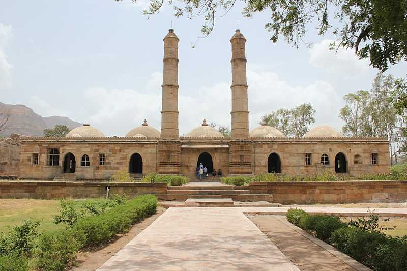
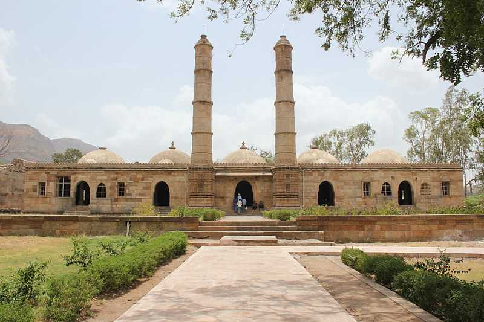
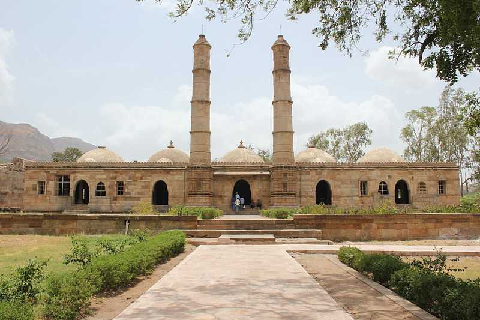
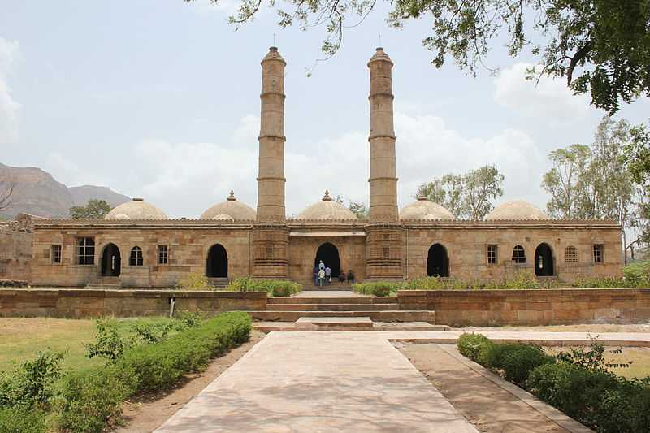

State Food
State Dance

State Tourism
 
Visit More...

Visit More...

Visit More...

Visit More...
Diamond city of India
Surat is famous for its diamond cutting and polishing and is known as the Diamond City of India.
90% of all diamond cutting and polishing on the planet takes place in Surat. Gujarat has the
longest sea shore compared to any other Indian state. Gujarat has been one of the main centres
of the Indus Valley Civilization. It contains major ancient metropolitan cities from the Indus
Valley such as Lothal, Dholavira, and Gola Dhoro.